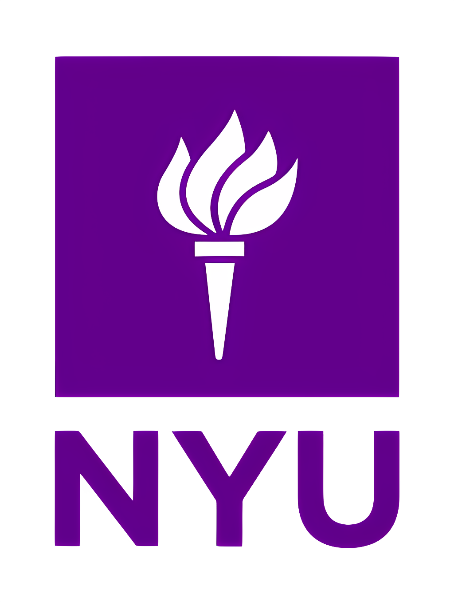

About
I’m Yang Hu, a master’s student in Computer and Information Science at the University of Pennsylvania. I earned my Bachelor’s degree in computer science and business studies from New York University. I’m focused on building AI systems that drive real-world transformation, improving decision-making, efficiency, and accessibility across industries. At JLL Technologies, I integrated LLMs into automated data pipelines to enhance data quality and scale enterprise analytics workflows. At NYU Langone Health, I applied deep learning to medical imaging research focused on improving early disease assessment and clinical decision support (Paper). In Summer 2026, I will join TikTok as a Data Engineering Intern, where I will explore integrating LLMs and agent-based systems into large-scale data workflows.
Education
-
University of Pennsylvania M.S.E. in Computer & Information Science • Aug 2025 – Dec 2026 (Expected)
-
New York University B.A. in Computer Science & Business Studies • Sept 2021 – May 2025 Honors: Magna Cum Laude, University Honors Scholar, Albert Gallatin Scholar, Dean's List
Internships
- TikTok — Data Engineering Intern 2026
- JLL Technologies — Data Engineering Intern Entity matching with GPT-4, SQL & PySpark pipelines, CI/CD automation 2024
- Gardenstar Group — Data Scientist Intern Real estate analytics, housing price prediction, time-series forecasting 2023
- Apexus Tech — Data Analyst Intern Automated ETF data pipelines, MySQL storage, NLP sentiment visualization 2023